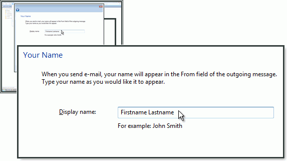
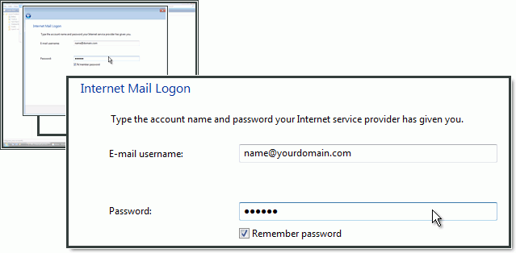
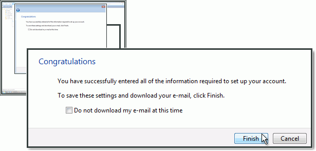

Windows Mail¶
Accedi a Windows Mail e seleziona Tools (Strumenti). Fai clic su Accounts (Account).

Fai clic su Add (Aggiungi).

Scegli l’opzione E-Mail Account (Account e-mail) e fai clic su Next (Avanti).

Inserisci Display name (Nome da visualizzare) e fai clic su Next (Avanti).
Inserisci l’indirizzo e-mail e fai clic su Next (Avanti).

Seleziona IMAP e inserisci imap.ewake.itm in Incoming mail (IMAP) server (Server della posta in entrata IMAP).
Come server della posta in uscita(SMTP), inserisci smtp.ewake.it e spunta la casella Outgoing server requires authentication (Il server in uscita richiede l’autenticazione).
Inserisci l’indirizzo e-mail e la password.
Hai completato la configurazione. Fai clic su Finish (Fine).
Configurazione del server SMTP¶
Seleziona l’account appena creato e fai clic sul pulsante Properties (Proprietà).

Seleziona la scheda Advanced. In Outgoing mail (SMTP) (Posta in uscita), indica 465 e seleziona This server requires a secure connection (SSL).
Come Incoming mail (IMAP) (Posta in entrata), inserisci 993 seleziona This server requires a secure connection (SSL).
Fai clic su OK.